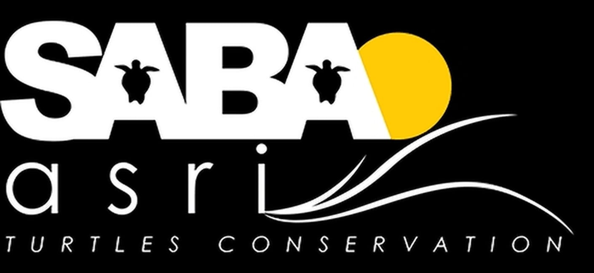

Tap to start
Checking what's on this device…
Your translations will appear here, newest first.

For safety, browsers only allow the microphone on real websites - not on files saved on your computer.
melvint-comp.github.io/SABA-asri-Live-Interpreter
Speak, and see it translated.
Tap to start
Checking what's on this device…
Your translations will appear here, newest first.